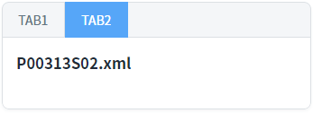
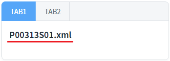
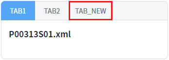
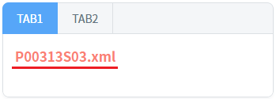
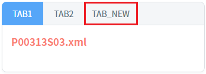
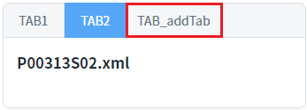
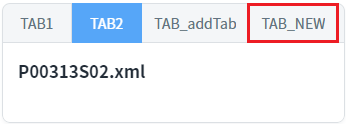
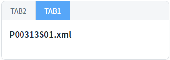
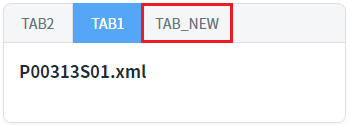

TabControl의 'addTab' 메소드를 사용하여 탭을 추가할 때, 두 번째 인자 JSON 객체의 'openAction' 속성 설정 값에 따른 동작을 비교한 예제입니다.
'openAction' 속성은 'addTab' 메소드의 첫 번째 인자에 지정한 탭의 ID와 동일한 ID를 가진 탭이 존재하는 경우 탭의 추가 방식을 지정할 수 있습니다. 동일한 ID가 없는 경우에는 신규 탭이 추가됩니다.
'openAction'의 설정 값에 따른 동작은 다음과 같습니다.
select : 동일한 ID의 탭을 선택.
exist : 탭 ID에 해당하는 탭의 src를 바꿔 로딩하고 해당 탭을 선택. (콘텐츠 영역을 'wframe' 또는 'iframe'으로 구성하지 않은 경우에는 오류가 발생합니다.)
new : 새로운 탭으로 생성. 동일한 ID가 있는 경우 ID가 변경되어 생성.
last : 동일한 ID의 탭을 마지막 탭으로 이동시키고 탭을 선택.
탭 추가 - 'openAction' 속성의 설정 값을 'select'로 지정
탭 추가 - 'openAction' 속성의 설정 값을 'exist'로 지정
탭 추가 - 'openAction' 속성의 설정 값을 'new'로 지정
탭 추가 - 'openAction' 속성의 설정 값을 'last'로 지정
예제 영역 'openAction' 설정 값 : select에서 테스트합니다.
1
STEP 1: 초기 상태를 확인합니다.
TabControl에 탭 'TAB1', 'TAB2' 구성되어있고, 탭 'TAB2'가 선택되었습니다.
TabControl에 2개의 탭이 구성되어 있고, 각 탭의 콘텐츠는 다음과 같이 지정되어있습니다.
탭 'TAB1' : WFrame으로 파일 '/page/P00313S01.xml'이 지정.
탭 'TAB2' : WFrame으로 파일 '/page/P00313S02.xml'이 지정.
Image 1.브라우저(Chrome) 실행 예시

2
STEP 2: 탭 'TAB1'과 동일한 ID의 탭을 추가합니다.
"탭 'TAB1'과 동일한 ID로 탭을 추가하는 경우 1-1" 버튼을 클릭합니다.
'addTab' 메소드는 다음과 같은 인자로 호출됩니다.Example 1.'addTab' 메소드의 인자
"tac_exam1_1", { "label": "TAB_addTab", "openAction": "select" }, { "src": "/page/P00313S03.xml", "wframe": true }
3
STEP 3: 실행된 결과를 확인합니다.
탭 'TAB1'이 선택됩니다. 'addTab' 메소드에 지정한 파일로 변경되지 않습니다.
Image 2.브라우저(Chrome) 실행 예시

화면의 로그 확인 textarea 또는 브라우저의 개발자 도구의 콘솔(console)탭에 출력된 로그를 확인합니다.
Example 2.Log
[10:41:59] # TabControl 'tac_exam1'의 'addTab' 메소드의 반환 값(탭의 ID): "tac_exam1_1"
4
STEP 4: 새로운 ID의 탭을 추가합니다.
"동일한 ID의 탭이 없는 경우 1-2" 버튼을 클릭합니다.5
STEP 5: 실행된 결과를 확인합니다.
탭 'TAB_NEW'가 추가됩니다. 추가된 탭은 선택되지 않습니다.
Image 3.브라우저(Chrome) 실행 예시

화면의 로그 확인 textarea 또는 브라우저의 개발자 도구의 콘솔(console)탭에 출력된 로그를 확인합니다.
Example 3.Log
[10:51:31] # TabControl 'tac_exam1'의 'addTab' 메소드의 반환 값(탭의 ID): "tac_exam1_new"
예제 영역 'openAction' 설정 값 : exist에서 테스트합니다.
1
STEP 1: 초기 상태를 확인합니다.
TabControl에 탭 'TAB1', 'TAB2' 구성되어있고, 탭 'TAB2'가 선택되었습니다.
TabControl에 2개의 탭이 구성되어 있고, 각 탭의 콘텐츠는 다음과 같이 지정되어있습니다.
탭 'TAB1' : WFrame으로 파일 '/page/P00313S01.xml'이 지정.
탭 'TAB2' : WFrame으로 파일 '/page/P00313S02.xml'이 지정.
Image 4.브라우저(Chrome) 실행 예시
2
STEP 2: 탭 'TAB1'과 동일한 ID의 탭을 추가합니다.
"탭 'TAB1'과 동일한 ID로 탭을 추가하는 경우 2-1" 버튼을 클릭합니다.
'addTab' 메소드는 다음과 같은 인자로 호출됩니다.Example 4.'addTab' 메소드의 인자
"tac_exam2_1", { "label": "TAB_addTab", "openAction": "exist" }, { "src": "/page/P00313S03.xml", "wframe": true }
3
STEP 3: 실행된 결과를 확인합니다.
탭 'TAB1'이 선택됩니다. 'addTab' 메소드에 지정한 파일로 변경됩니다.
Image 5.브라우저(Chrome) 실행 예시

화면의 로그 확인 textarea 또는 브라우저의 개발자 도구의 콘솔(console)탭에 출력된 로그를 확인합니다.
Example 5.Log
[12:06:59] # TabControl 'tac_exam2'의 'addTab' 메소드의 반환 값(탭의 ID): "tac_exam2_1"
4
STEP 4: 새로운 ID의 탭을 추가합니다.
"동일한 ID의 탭이 없는 경우 2-2" 버튼을 클릭합니다.5
STEP 5: 실행된 결과를 확인합니다.
탭 'TAB_NEW'가 추가됩니다. 추가된 탭은 선택되지 않습니다.
Image 6.브라우저(Chrome) 실행 예시

화면의 로그 확인 textarea 또는 브라우저의 개발자 도구의 콘솔(console)탭에 출력된 로그를 확인합니다.
Example 6.Log
[12:11:48] # TabControl 'tac_exam2'의 'addTab' 메소드의 반환 값(탭의 ID): "tac_exam2_new"
예제 영역 'openAction' 설정 값 : new에서 테스트합니다.
1
STEP 1: 초기 상태를 확인합니다.
TabControl에 탭 'TAB1', 'TAB2' 구성되어있고, 탭 'TAB2'가 선택되었습니다.
TabControl에 2개의 탭이 구성되어 있고, 각 탭의 콘텐츠는 다음과 같이 지정되어있습니다.
탭 'TAB1' : WFrame으로 파일 '/page/P00313S01.xml'이 지정.
탭 'TAB2' : WFrame으로 파일 '/page/P00313S02.xml'이 지정.
Image 7.브라우저(Chrome) 실행 예시
2
STEP 2: 탭 'TAB1'과 동일한 ID의 탭을 추가합니다.
"탭 'TAB1'과 동일한 ID로 탭을 추가하는 경우 3-1" 버튼을 클릭합니다.
'addTab' 메소드는 다음과 같은 인자로 호출됩니다.Example 7.'addTab' 메소드의 인자
"tac_exam3_1", { "label": "TAB_addTab", "openAction": "new" }, { "src": "/page/P00313S03.xml", "wframe": true }
3
STEP 3: 실행된 결과를 확인합니다.
탭 'TAB_addTab'이 추가됩니다. 추가된 탭은 선택되지 않습니다. 'addTab' 메소드에 지정한 탭의 ID가 변경됩니다.
Image 8.브라우저(Chrome) 실행 예시

화면의 로그 확인 textarea 또는 브라우저의 개발자 도구의 콘솔(console)탭에 출력된 로그를 확인합니다.
Example 8.Log
[12:23:35] # TabControl 'tac_exam3'의 'addTab' 메소드의 반환 값(탭의 ID): "tac_exam3_1_0"
4
STEP 4: 새로운 ID의 탭을 추가합니다.
"동일한 ID의 탭이 없는 경우 1-2" 버튼을 클릭합니다.5
STEP 5: 실행된 결과를 확인합니다.
탭 'TAB_NEW'가 추가됩니다. 추가된 탭은 선택되지 않습니다.
Image 9.브라우저(Chrome) 실행 예시

화면의 로그 확인 textarea 또는 브라우저의 개발자 도구의 콘솔(console)탭에 출력된 로그를 확인합니다.
Example 9.Log
[12:28:50] # TabControl 'tac_exam3'의 'addTab' 메소드의 반환 값(탭의 ID): "tac_exam3_new"
영역 'openAction' 설정 값 : last에서 테스트합니다.
1
STEP 1: 초기 상태를 확인합니다.
TabControl에 탭 'TAB1', 'TAB2' 구성되어있고, 탭 'TAB2'가 선택되었습니다.
TabControl에 2개의 탭이 구성되어 있고, 각 탭의 콘텐츠는 다음과 같이 지정되어있습니다.
탭 'TAB1' : WFrame으로 파일 '/page/P00313S01.xml'이 지정.
탭 'TAB2' : WFrame으로 파일 '/page/P00313S02.xml'이 지정.
Image 10.브라우저(Chrome) 실행 예시
2
STEP 2: 탭 'TAB1'과 동일한 ID의 탭을 추가합니다.
"탭 'TAB1'과 동일한 ID로 탭을 추가하는 경우 4-1" 버튼을 클릭합니다.
'addTab' 메소드는 다음과 같은 인자로 호출됩니다.Example 10.'addTab' 메소드의 인자
"tac_exam4_1", { "label": "TAB_addTab", "openAction": "last" }, { "src": "/page/P00313S03.xml", "wframe": true }
3
STEP 3: 실행된 결과를 확인합니다.
탭 'TAB1'이 마지막 탭의 위치로 이동하고 탭이 선택됩니다. 'addTab' 메소드에 지정한 파일로 변경되지 않습니다.
Image 11.브라우저(Chrome) 실행 예시

화면의 로그 확인 textarea 또는 브라우저의 개발자 도구의 콘솔(console)탭에 출력된 로그를 확인합니다.
Example 11.Log
[12:35:37] # TabControl 'tac_exam4'의 'addTab' 메소드의 반환 값(탭의 ID): "tac_exam4_1"
4
STEP 4: 새로운 ID의 탭을 추가합니다.
"동일한 ID의 탭이 없는 경우 4-2" 버튼을 클릭합니다.5
STEP 5: 실행된 결과를 확인합니다.
탭 'TAB_NEW'가 추가됩니다. 추가된 탭은 선택되지 않습니다.
Image 12.브라우저(Chrome) 실행 예시

화면의 로그 확인 textarea 또는 브라우저의 개발자 도구의 콘솔(console)탭에 출력된 로그를 확인합니다.
Example 12.Log
[12:40:36] # TabControl 'tac_exam4'의 'addTab' 메소드의 반환 값(탭의 ID): "tac_exam4_new"
TabControl의 'addTab' 메소드를 사용하여 스크립트를 작성합니다. 'openAction' 속성은 'addTab' 메소드의 두 번째 인자 JSON 객체에 설정합니다. 세부 설정은 아래의 스크립트 예시에 작성되어 있습니다.
Example 13.Script
// TabControl 'tac_exam1'에 탭 추가하기 - "openAction": "select" var result = await tac_exam1.addTab( "tac_exam1_1", { "label": "TAB_addTab", "openAction": "select" }, { "src": "/page/P00313S03.xml", "wframe": true } ); // 반환 값 예시) 추가된 탭의 ID가 반환됩니다. // 'tac_exam1_1' // 'openAction'의 설정 값에 따른 동작 방식은 다음과 같습니다. // - 'select' : 동일한 ID의 탭을 선택. // - 'exist' : 탭 ID에 해당하는 탭의 src를 바꿔 로딩하고 해당 탭을 선택. (콘텐츠 영역을 'wframe' 또는 'iframe'으로 구성하지 않은 경우에는 오류가 발생합니다.) // - 'new' : 새로운 탭으로 생성. 동일한 ID가 있는 경우 ID가 변경되어 생성. // - 'last' : 동일한 ID의 탭을 마지막 탭으로 이동시키고 탭을 선택.
addTab( id , tabOpt , contOpt )
tabOpt.openAction